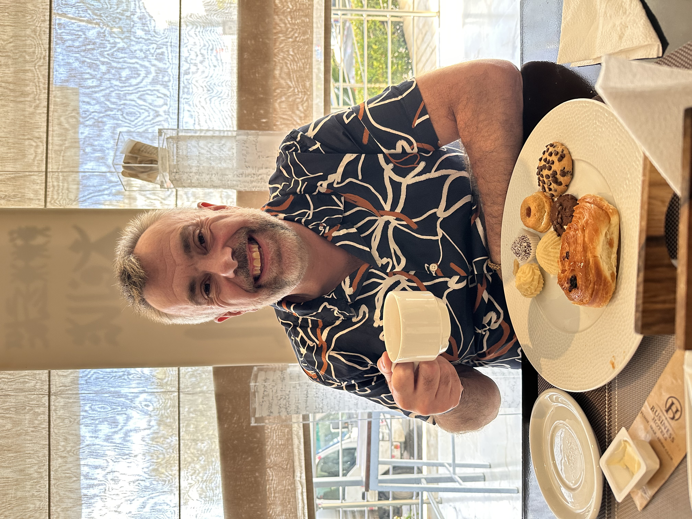

Convesational English Language Professional. British English Teacher
| Ocean Park, Hanoi, Vietnam | |
| 098 3096 700 | |
| darren.marshall71@yahoo.com | |
| Résumé | |
Chat Over Coffee with a Native British Speaker – Improve Your English Naturally!
Hello! My name is Darren, and I’m from Yorkshire, England. I’m currently living in Vietnam and absolutely loving every moment here. The people are incredibly warm and welcoming, the culture is rich and fascinating, and the atmosphere is full of energy and life. Every day feels like an adventure, whether I’m exploring a new part of the city, trying out a new dish, or simply having a chat with friendly locals. There’s something truly special about Vietnam, and I feel lucky to be experiencing it firsthand.
One of the things I’ve always enjoyed is meeting new people and engaging in great conversations. I love chatting with people from all walks of life, learning about their cultures, their experiences, and their perspectives. I find it fascinating to hear about different traditions, local cuisines, and the best hidden spots to visit—whether it’s a small family-run café, a scenic place off the beaten track, or a dish I’ve never tried before. The exchange of stories and experiences is something I truly cherish.
Now, I’d love to offer something back in return! I know that many Vietnamese people are looking for opportunities to practice their English in a natural and enjoyable way. That’s where I come in! I’d love to help English learners gain confidence in speaking through relaxed and friendly conversations. This isn’t about lessons, exams, or structured study—just casual chats over a cup of coffee, where you can practise speaking with a native British speaker, pick up new expressions, improve your pronunciation, and learn more about the UK, its culture, and its people. It’s all about making English feel natural, fun, and part of your everyday life.
So, if you’re looking for a chance to improve your conversational English in an easy-going and pressure-free environment, I’d love to meet up and have a chat!

Personalised chat on relevant topics of interest!
What I Offer
This isn’t an English class, and there’s no exam or qualification at the end. It’s simply a chance to sit down over a cup of coffee and have a natural conversation in English. Whether you’re looking to:
- Improve your pronunciation
- Build confidence in speaking English
- Practice casual, everyday conversations
- Learn more about British culture and accents
- Prepare for an important work meeting, interview, or oral exam in a relaxed way
I’d love to help! I can adapt to different topics of conversation, whether it’s everyday life, work, hobbies, travel, food, or anything else that interests you. The focus is on natural, real-life conversations rather than structured lessons or grammar drills.
A Bit About Me
I’m from Yorkshire, a beautiful region in the north of England known for its rolling countryside, historic cities, and, of course, Yorkshire puddings! <\br> Yorkshire people are often known for being warm, friendly, and straight-talking – and I’m no exception!
I love meeting new people, sharing stories, and learning about different cultures. Since moving to Vietnam, I’ve been exploring as much as I can, trying local foods, and enjoying the friendly nature of the people here. I’d love to hear about your experiences too – your travels, your favourite places in Vietnam, and your interests!
Why Join Me for a Chat?
- Relaxed & Friendly – No pressure, no tests, just an enjoyable conversation.
- Improve Your Pronunciation – Get real-time feedback from a native speaker.
- Learn British Culture & Expressions – Pick up natural phrases and slang.
- Flexible & Adaptable – Talk about anything that interests you, or get help preparing for a specific conversation.
Improve your English naturally over a relaxed coffee conversation!
Who is This For?
Anyone who wants to improve their English in a natural way! Whether you’re a student, professional, or just someone curious about British culture, I’m happy to meet and chat.
How It Works?
We’ll meet at a coffee shop in Hanoi, grab a drink, and just talk! Sessions are casual and affordable – just enough to cover my coffee and time. The idea is to keep it simple and accessible for those who are genuinely interested in improving their English while also exchanging cultures and experiences.
.jpg)
Discover British culture, accents, and expressions in a fun way!
Interested? Let’s Chat!
I'm available for teaching opportunities in Hanoi and open to both in-person and online classes. Feel free to reach out via Zalo or email.
.jpg)
Meet, talk, and exchange stories with a native English speaker!